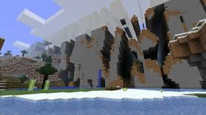

Dynamic light
Torches, glowstone and lanterns can cast soft light onto nearby spaces.
03 / SHADERS · A DIFFERENT KIND OF LIGHT
Shaders change the way a Minecraft world renders light, shadow, water and sky. They can turn a familiar view cinematic—but what your setup can handle matters.
WHAT SHADERS DO
Shader modifications alter how visual effects are rendered. Depending on the shader pack, lighting, shadows, water and textures can look more atmospheric or more realistic. The block-built world is still Minecraft—the way light falls across it changes.
The supplied guide describes OptiFine and Iris as tools commonly used to support shaders on Java setups. Compatibility and installation steps depend on the current game version, loader and chosen pack, so check those requirements before installing.

UNDER THE HOOD
Shader packs combine visual effects in different ways. Every effect below comes from the supplied shader guide.
Torches, glowstone and lanterns can cast soft light onto nearby spaces.
Shadows shift with the sun, adding a day-to-night change in mood.
Water can gain transparency, reflections and a more varied surface.
Clouds, stars and sun or moon effects add detail to the horizon.
Subtle shading at corners helps blocks feel more grounded and dimensional.
Some packs add glow, lens effects, motion blur or depth of field.
PACKS MENTIONED IN THE GUIDE
These shader names appear in the supplied guide. Current availability and compatibility can change; verify before installing.
Sonic Ether’s Unbelievable Shaders is described in the source as emphasizing realistic lighting, shadows and water.
The source describes vibrant color, soft lighting and many customization options.
Different presets in the source span lighter settings through more demanding visual effects.
Presented by the source guide as a high-quality, realism-oriented shader requiring more powerful hardware.
The guide highlights customizable lighting and fog effects.
The supplied list describes a balance of smooth lighting transitions and water reflections.
BEFORE YOU INSTALL
Shaders can be demanding. The source guide recommends a dedicated GPU for higher-quality effects, a compatible shader tool or mod, and adjusted settings when performance is an issue. Start with a lighter preset or lower render settings if your system struggles.
There’s no one hardware checklist that applies to every pack: performance depends on the version, edition, shader and computer. Read the pack’s own version and hardware notes first, and make a backup before changing a modded profile.
Check official Minecraft resources ↗Check whether the shader and loader support the same Minecraft edition and version you play.
Start with moderate settings. Lower render distance or visual options if frame rate drops.
Players in the supplied guide use shaders for aesthetics, cinematic creations and a more immersive mood.
COMPLETE ORIGINAL CHAPTERS
These expandable chapters preserve the supplied Minecraft document original information, examples, lists and conclusions. Open a chapter, then any section within it.
Source note: Text below is transcribed from the supplied project document and has not been fact-checked as current game guidance. Version-specific or speculative statements remain in their original context.
Shaders of Minecraft
Minecraft shaders are modifications (mods) or enhancements to the game that transform its graphics, creating a visually stunning and immersive experience. Shaders improve Minecraft’s lighting, textures, shadows, and overall atmosphere, making the blocky world more realistic or aesthetically pleasing. Below is an overview of Minecraft shaders:
Shaders are visual modifications added to Minecraft through third-party tools or mods. They work by enhancing the way light, shadows, water, and textures are rendered in the game. Typically, shaders are installed using tools like OptiFine or Iris, which optimize Minecraft’s graphics for better performance and support shader functionality.
Dynamic Lighting
Light sources (like torches, glowstone, and lanterns) emit soft, realistic light that interacts with the environment.
Shadows shift dynamically based on the sun's position, creating a day-night cycle with realistic lighting transitions.
Water Effects
Shaders often improve water textures, adding reflections, transparency, and rippling effects to lakes, rivers, and oceans.
Improved Skybox
Enhanced skies feature realistic clouds, stars, and sun/moon effects. Some shaders even add sunsets and weather-dependent visuals, like rainstorms with mist.
Ambient Occlusion
Subtle shadows appear in corners and where blocks meet, giving a sense of depth to the game’s geometry.
Bloom and Lens Effects
Bright lights create a glowing or lens flare effect, enhancing the brightness of the sun or other intense light sources.
Motion Blur and Depth of Field
Some shaders add camera effects like motion blur and depth of field, which focus on specific areas while blurring distant objects.
Realistic Textures
While shaders don’t change textures directly, they complement high-resolution texture packs by making them look more vibrant and natural.
SEUS (Sonic Ether's Unbelievable Shaders)
Renowned for realistic lighting, shadows, and water effects.
Focuses on delivering cinematic graphics while maintaining decent performance.
BSL Shaders
Known for vibrant colors, soft lighting, and high customizability.
Balanced between realism and performance, making it a popular choice.
Sildur's Vibrant Shaders
Offers various presets (lite to extreme) for different hardware capabilities.
Enhances lighting and water while retaining the game's vanilla charm.
Continuum Shaders
High-quality shaders designed for realism, with advanced effects like ray tracing and global illumination.
Demands powerful hardware for optimal performance.
Chocapic13's Shaders
Highly customizable and works well on mid-range systems.
Adds realistic lighting, fog effects, and stunning water visuals.
KUDA Shaders
Delivers a balanced mix of performance and aesthetics.
Focuses on smooth lighting transitions and detailed water reflections.
Shaders can be resource-intensive, especially on lower-end hardware. Players often need:
A dedicated GPU for rendering high-quality graphics.
OptiFine or Iris installed for shader compatibility and optimization.
Adjusted settings (e.g., lowering render distance or choosing lighter shaders) to balance performance and visuals.
Aesthetic Appeal: Shaders make Minecraft worlds look beautiful and realistic, enhancing the experience for builders and adventurers.
Cinematic Creations: Content creators often use shaders for making screenshots or videos look visually stunning.
Immersive Gameplay: Shaders transform the atmosphere, making survival, exploration, or creative building more engaging.
Whether you're creating a breathtaking landscape, filming a cinematic video, or simply wanting to experience Minecraft in a whole new way, shaders add a layer of beauty and depth to the game that brings its blocky charm to life.